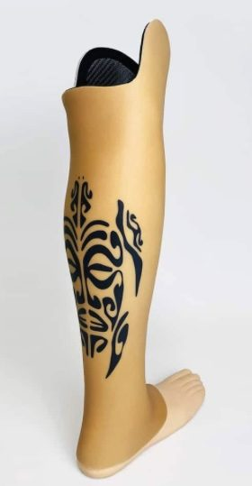

NouveauAqualeg
Système Aqualeg
Nous sommes dépositaires du système Aqualeg. Ces coques réalistes et ultra-résistantes pour prothèses tibiales et fémorales permettent de vivre pleinement les activités aquatiques et estivales sans changer de prothèse.
En parler avec nous